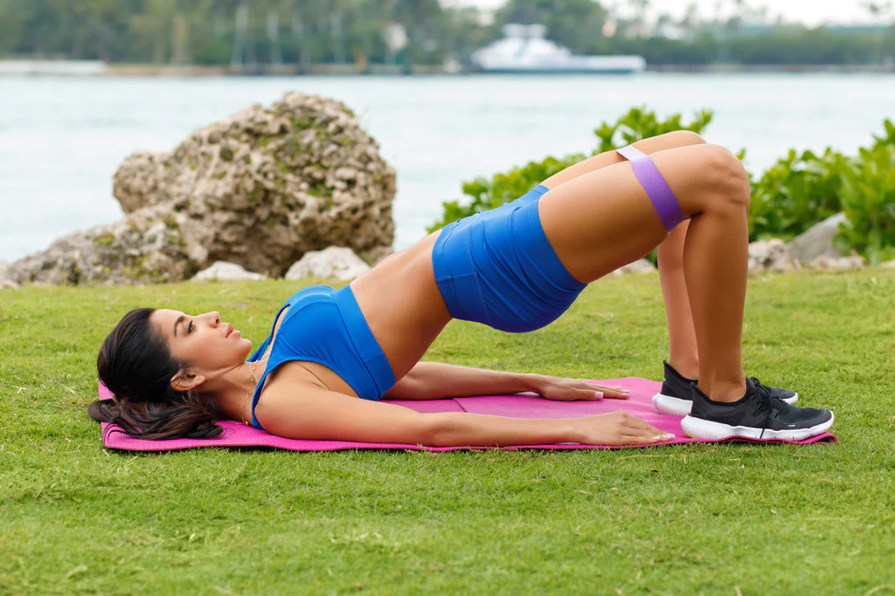

Open the legs as wide as the hips and the arms as wide as the shoulders.
HOW TO EXECUTE
Pull the belly button in, away from the ground, to engage the abs.
Relax the shoulders as you reach the arms up off the ground and squeeze the quads as you lift the legs off the ground.
GLUTE BRIDGE

STARTING POSITION
Lie on your back with your feet flat on the floor and knees bent.
HOW TO PERFORM
Engage your core, pressing your low back into the ground.
Then, slowly curl your back off the ground driving your hips toward the sky.
Stop when your hips have created a straight line from your knees to your upper back, hold the position and then slowly lower back down to the starting position.